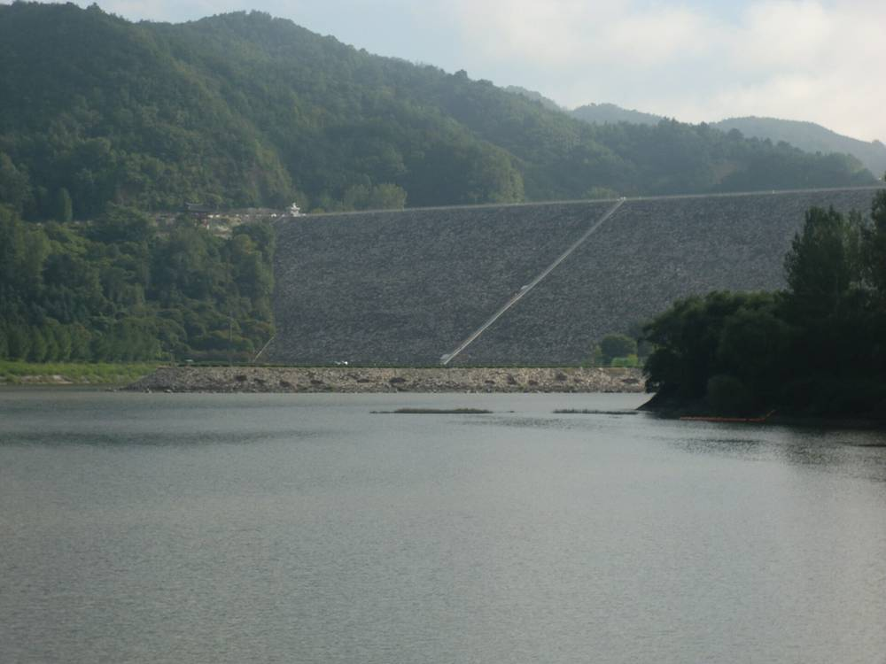

안동 시민단체, 쇠제비갈매기 번식 모래섬서 집회…"K-water 안동댐 수상태양광 철회하라"

11개 기관·단체 60여 명 참여…수자원공사는 90MW→45MW로 줄이고 상류 도목리로 입지 변경 제시했지만 "새 비행 범위 수십㎞, 옮겨도 영향 못 피해"
경북 안동 지역 시민단체들이 16일 안동호의 쇠제비갈매기 인공번식지인 모래섬에서 집회를 열고 한국수자원공사(K-water)가 추진하는 안동댐 수상태양광 발전사업을 철회하라고 요구했다. '안동호 지키기 범시민 대책위원회'에는 지역 11개 기관·단체가 참여했으며, 이날 집회에는 회원 60여 명이 모였다. 대책위는 수상태양광 시설이 멸종위기 야생생물 2급인 쇠제비갈매기의 서식지를 위협하고 안동호의 관광자원 가치를 떨어뜨릴 수 있다고 주장했다. 수자원공사는 6월 안동댐 일대에 90MW 규모로 사업을 추진했다가 반대 여론에 45MW로 줄였고, 지난달에는 번식지 주변 설치 계획을 접고 댐 상류 도목리 인근으로 입지를 옮기는 안을 내놨다. 시민단체들은 쇠제비갈매기의 비행 범위가 수십㎞에 이르러 입지만 바꿔서는 생태계 영향을 피하기 어렵다며 충분한 생태 조사 없는 추진에 반대하고 있다. 쇠제비갈매기는 2013년 안동호에서 처음 발견된 뒤 해마다 봄이면 이 모래섬을 찾아 번식해 왔다.
시민에너지 관점
수상태양광은 땅이 부족한 우리나라에서 큰 잠재력을 지닌 자원이지만, 멸종위기종 번식지 문제를 '규모 줄이기'와 '위치 옮기기'만으로 풀려 하면 주민 신뢰를 얻기 어렵다. 이달 초 안동댐 상생 포럼에서는 이 사업 수익을 2,000여 가구에 '햇빛연금'으로 나누는 방안이 나왔는데, 생태 검증이 빠지면 그 이익공유도 설득력을 잃는다. 수자원공사는 독립된 전문가와 시민단체가 함께 참여하는 생태 조사를 먼저 하고, 그 결과와 입지 후보를 공개해야 한다. 주민이 계획 단계부터 참여하고 지분과 수익을 갖는 구조여야, 자연과 전환을 함께 지키는 수상태양광이 가능하다.
출처: 연합뉴스 2026-11-16 김선형 원문 보기
安東の市民団体、コアジサシ繁殖の砂州で集会…「K-waterの安東ダム水上太陽光を撤回せよ」
11の機関・団体から約60人参加…水資源公社は90MW→45MWに縮小し上流の道木里への立地変更を示したが「飛行範囲は数十km、移しても影響は避けられない」
韓国・慶尚北道安東の市民団体が16日、安東湖のコアジサシの人工繁殖地である砂州で集会を開き、韓国水資源公社（K-water）が進める安東ダム水上太陽光発電事業の撤回を求めた。「安東湖を守る汎市民対策委員会」には地域の11の機関・団体が参加しており、この日の集会には会員約60人が集まった。対策委は、水上太陽光施設が絶滅危惧野生生物2級のコアジサシの生息地を脅かし、安東湖の観光資源としての価値を損なうおそれがあると主張した。水資源公社は6月に安東ダム一帯で90MW規模の事業を進めたが、反対世論を受けて45MWに縮小し、先月には繁殖地周辺への設置計画を取りやめ、ダム上流の道木里付近に立地を移す案を示した。市民団体は、コアジサシの飛行範囲が数十kmに及ぶため立地を変えるだけでは生態系への影響を避けにくいとして、十分な生態調査のないまま進めることに反対している。コアジサシは2013年に安東湖で初めて確認されて以来、毎年春にこの砂州を訪れて繁殖してきた。
市民エネルギーの視点
水上太陽光は土地の乏しい韓国で大きな潜在力を持つ資源だが、絶滅危惧種の繁殖地の問題を「規模縮小」と「立地移転」だけで解こうとすれば住民の信頼は得にくい。今月初めの安東ダム共生フォーラムでは、この事業の収益を約2,000世帯に「日差し年金」として分ける案が出たが、生態系の検証が抜ければその利益共有も説得力を失う。水資源公社は独立した専門家と市民団体が共に加わる生態調査を先に行い、その結果と立地候補を公開すべきだ。住民が計画段階から参加し持ち分と収益を持つ仕組みであってこそ、自然と転換を共に守る水上太陽光が可能になる。
韩国安东市民团体在小燕鸥繁殖沙洲集会："K-water撤回安东大坝水上光伏"
11个机构和团体约60人参加…水资源公社已从90兆瓦缩减至45兆瓦并提出迁往上游道木里，但团体称"飞行范围达数十公里，迁址也难避影响"
韩国庆尚北道安东地区市民团体16日在安东湖小燕鸥人工繁殖地沙洲举行集会，要求韩国水资源公社（K-water）撤回安东大坝水上光伏发电项目。"守护安东湖泛市民对策委员会"由当地11个机构和团体组成，当天约60名会员参加集会。对策委员会认为，水上光伏设施会威胁濒危野生动物二级保护物种小燕鸥的栖息地，并损害安东湖的旅游资源价值。水资源公社6月曾在安东大坝一带推进90兆瓦规模的项目，因反对声浪缩减至45兆瓦，上月又放弃在繁殖地周边安装的计划，提出将选址迁至大坝上游道木里附近。市民团体表示，小燕鸥的飞行范围达数十公里，仅靠变更选址难以避免对生态系统的影响，反对在没有充分生态调查的情况下推进。小燕鸥自2013年首次在安东湖被发现后，每年春天都会来到这片沙洲繁殖。
市民能源视角
在土地稀缺的韩国，水上光伏是潜力巨大的资源，但如果只用"缩小规模"和"迁移选址"来解决濒危物种繁殖地问题，就难以赢得居民信任。本月初的安东大坝共生论坛上曾提出把项目收益以"阳光年金"形式分给约2,000户的方案，但如果缺少生态验证，这种利益共享也会失去说服力。水资源公社应先开展由独立专家和市民团体共同参与的生态调查，并公开结果和候选选址。只有让居民从规划阶段就参与并拥有股权和收益，才能实现同时守护自然与转型的水上光伏。
Andong civic groups rally on tern breeding sandbar, demand K-water drop Andong Dam floating solar plan
About 60 members from 11 organizations join; water agency has cut the plan from 90 MW to 45 MW and proposed moving upstream, but groups say terns range tens of kilometers
Civic groups in Andong, North Gyeongsang Province, held a rally on Nov. 16 on the sandbar in Andong Lake that serves as an artificial breeding site for little terns, demanding that Korea Water Resources Corp. (K-water) withdraw its floating solar project at Andong Dam. The Pan-Citizen Committee to Protect Andong Lake includes 11 local institutions and groups, and about 60 members attended. The committee argued that floating solar would threaten the habitat of the little tern, a Class II endangered species, and damage the lake's value as a tourism resource. K-water pursued a 90-megawatt project around the dam in June, cut it to 45 megawatts amid opposition, and last month dropped plans near the breeding site, proposing instead to move it upstream near Domok-ri. The groups say little terns fly over a range of tens of kilometers, so relocation alone cannot avoid ecological impacts, and they oppose proceeding without a thorough ecological survey. Little terns were first found at Andong Lake in 2013 and have returned to breed on the sandbar every spring since.
Citizen Energy View
Floating solar is a resource with great potential in land-scarce Korea, but trying to resolve conflicts over an endangered species' breeding ground only by shrinking or moving the project will not win residents' trust. A forum on the dam earlier this month floated sharing project income with about 2,000 households as a "sunlight pension," yet without ecological verification that benefit-sharing loses its persuasive force. K-water should first conduct an ecological survey with independent experts and civic groups, and disclose the results and candidate sites. Only when residents take part from the planning stage and hold equity and income can floating solar protect both nature and the energy transition.